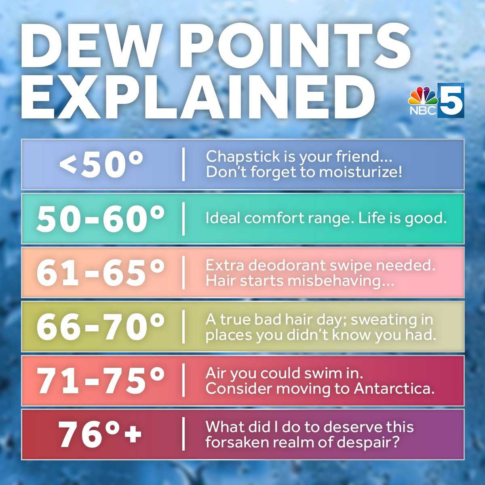

Eric Johnson, G575 ◆ July 8, 2024
As a series of brutal, even record-breaking heat waves cross the United States this year, people across the country are checking weather apps to see what the day's forecast will bring them, and to figure out how best to combat the combination of heat and humidity that threatens to smother them like a pile of sauna blankets.
Forecasters love to share information about the day's high temperature and relative humidity: a 90°F day with 80% relative humidity sure sounds oppressive. But how does that compare to, say, an 80°F day with 90% relative humidity? Or a 72°F day with 50% relative humidity? Is there an easy way to tell whether you can say: "Today's going to feel like a great day!"
In fact, there is! The number you want to understand is the dew point.
The National Weather Service defines dew point as: "the temperature the air needs to be cooled to (at constant pressure) in order to achieve a relative humidity (RH) of 100%. At this point the air cannot hold more water in the gas form. If the air were to be cooled even more, water vapor would have to come out of the atmosphere in the liquid form, usually as fog or precipitation."
But what does that actually mean?
First some background. The key to all this is the fact that warm air can carry more moisture in it than cool air can. Imagine a given block of air is a bucket that can hold water. A relative humidity of 50% means that air is holding half the water it could hold; our bucket is half-full of water.
If we don't add or subtract any moisture, what changes when the temperature of the air changes? In our bucket analogy, what then happens is that the amount of water stays the same, but the size of the bucket changes. If the air heats up, its bucket gets bigger and the relative amount of water goes down (say from 50% of the bucket to 25% of the bucket, but still the same amount of water!). If we cool the air, the bucket (the moisture carrying capacity) shrinks, and the relative humidity goes up: the same amount of water fills a higher percentage of the bucket when the bucket gets smaller.
The dew point is the temperature at which the relative humidity becomes 100%—in other words, the temperature at which the bucket gets small enough so the current amount of water fills it to the brim. If we shrink the air bucket even smaller, the moisture spills over as you'd expect—meaning it turns into fog, or condensation on a glass, frost on a window—or dew on the grass.
Why does this affect how we feel when we go outside? In essence, you could ask yourself: would I rather get soaked by a 10-gallon bucket that is half-full (so 50% relative humidity in the air, or five gallons of water), or would I rather get soaked by a 1-gallon bucket that is 100% full (so 100% relative humidity in the air, or 1 gallon of water)?
So what is a comfortable dew point?
It is of course quite possible for air to be too dry, causing chapped lips and dry skin—that happens in winter when the bucket is too small to carry much moisture or in the desert when there's not enough moisture even when the bucket (air temperature) is huge. As with many things in life, there is a kind of goldilocks zone for dew points that just feel pleasant.
This is of course a rough estimate—people can adapt to conditions in their particular localities, so there may be some variation, but this is a good rule of thumb.
The lesson is this: the higher the dew point, the greater the amount of moisture in the air. Check the dew point at the time you want to go outside and you should get a good sense for whether it's going to feel like a pleasant day to you or not.
An accurate dew point formula is quite a complicated thing, but a simplified version for general purposes is this, for temperatures in Fahrenheit:
Dewpoint Temperature = Air Temperature - 9⁄25 (100 - Relative Humidity)
There are indications that average dew points in a given location are changing over time, which may be no surprise as the atmosphere heats up generally, increasing its carrying capacity and affecting the creation of water vapor. The map below will give you the opportunity to see how the dew point for the city or cities of your choice has changed through the decades:
So when somebody next asks you about the heat, or trots out something about the "heat index" or "apparent temperature" or "feels-like," you are now ready to give them a solid number to go by. Just tell them, "just check the dew point, and if it's between 50°F and 60°F, it's going to be a great day!"
National Weather Service, Dew Point vs. Humidity
NBC5, Burlington, VT: Dew Points explained: A guide to understanding humidity — also source of table above
SensorPush, Understanding Dew Point